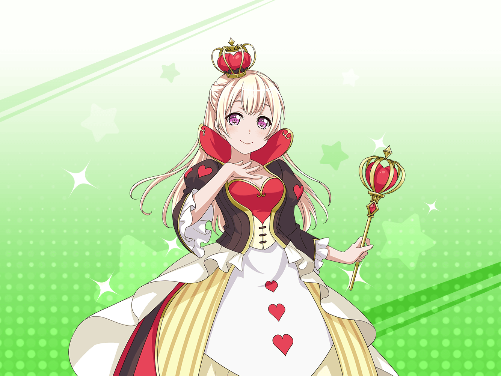

ショッピングモール
千聖
うーん……ふわふわした素材１つとっても、
こんなに種類があるのね
千聖
……あら、{{userName}}さん。こんにちは
千聖
私は新しい衣装のイメージをより明確にスタッフさんに
伝えるために、どんな素材があるのか知っておこうと思って
いろんな布を見ていたんです
千聖
衣装はうさぎをイメージしたふわふわしたものなので、
そういう素材を見ていたんですけど、
こんなに種類があって……驚いています
千聖
でも、イメージが明確に持てました。
新しいアイディアも浮かんできましたし
千聖
……インスピレーションっていうのは、どこで湧くのか
わからないものですね
千聖
うさぎをイメージした衣装を思いついたのも、
この間、たえちゃん達を手伝って、校舎に逃げた
うさぎを捕まえたところから思いついたものでしたし……
千聖
私が手伝いなんて珍しい、って顔してますね。
ふふ。困ってる後輩を見捨てるわけないじゃないですか？
千聖
確かに、大変でしたよ。うさぎは素早いから
なかなか捕まえられなくって……
千聖
でも、結果として衣装のインスピレーションも浮かんできたし
手伝ってよかったと思ってるんですよ
千聖
こんな風に、それまでの自分では考えが及ばなかった
ものが浮かんできたりする可能性があるのなら、
私ももっと視野を広げてみないとな、と思って
千聖
案外、イヴちゃんにならってブシドーの精神を
勉強するのもいいかもしれませんね？ ふふっ
千聖
自分もできることがあれば手伝いたい……？
ふふ、ありがとうございます
千聖
またうさぎが逃げてしまったときは、お願いしますね
千聖
……さて。そろそろ失礼します。
衣装スタッフさんと打ち合わせしなくちゃ
千聖
今度は{{userName}}さんから、いいインスピレーションを
いただけるのを期待してますね♪
千聖
……それでは♪